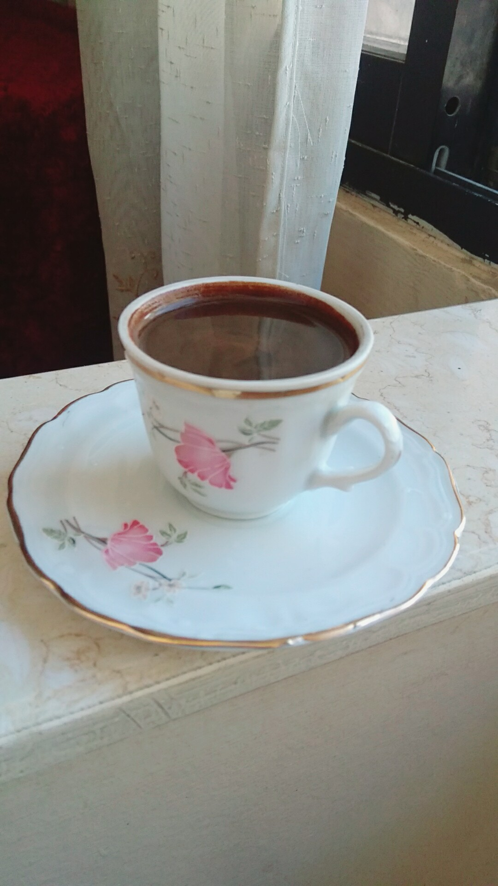

Coffee, beverage brewed from the roasted and ground seeds of the tropical evergreen coffee plants of African origin. Coffee is one of the three most popular beverages in the world (alongside water and tea) and one of the most profitable international commodities. Though coffee is the basis for an endless array of beverages, its popularity is mainly attributed to its invigorating effect, which is produced by caffeine, an alkaloid present in coffee.
Most types of coffee drinks comprise three common ingredients: espresso, steamed milk, and foam. Additional toppings can be added to each coffee type based on your customers’ unique preferences. The following are just some of the coffee drink definitions and possible cup pairings you may consider adding to your coffee shop menu. It’s important to note that drink ratios may vary from coffee shop to coffee shop.
No frills here: Black coffee is made from plain ground coffee beans that are brewed hot. It's served without added sugar, milk, or flavorings.
Coffee beans naturally contain caffeine, but roasters can use several different processes to remove almost all of it. Decaf coffee is brewed with these decaffeinated beans.
Most people know that a shot of espresso is stronger than the same amount of coffee, but what's the difference, exactly? There isn't anything inherently different about the beans themselves, but when beans are used to make espresso they're more finely ground, and they're brewed with a higher grounds-to-water ratio than what's used for coffee. The result is a thicker, more concentrated liquid with a bolder flavor. A single espresso is a one-ounce shot. It's also the base for popular coffee-shop drinks like lattes and cappuccinos